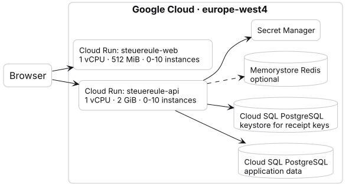

(source: deployment.puml)
| Element | Setting | Source |
|---|---|---|
| Two services | steuereule-api and steuereule-web, one container each, scaling to zero |
.github/workflows/deploy.yml |
| Database | Cloud SQL, one zone, automated backups with point-in-time recovery | infra/gcp/main.tf |
| Keystore | a separate Cloud SQL instance holding only the keys of receipt files: deleting a key makes the receipt unreadable in old backups too | ADR-0059 |
| Redis | optional (enable_redis): the owl's run log across instances and the sign-in rate limit |
ADR-0064 |
| Delivery | build images, take a backup before the rollout, new revision, on failure route traffic back to the previous one | deploy.yml |
| Infrastructure as code | OpenTofu/Terraform | infra/gcp/ |
Hosting decision: ADR-0053. infra/terraform, infra/k3s and infra/manifests additionally hold an older target environment on Hetzner with k3s (§11).
Because the API runs on up to ten instances, any state in process memory is separate per instance and is lost on scale-down. Today that affects the asynchronous print jobs and part of the rate limiting (§11).